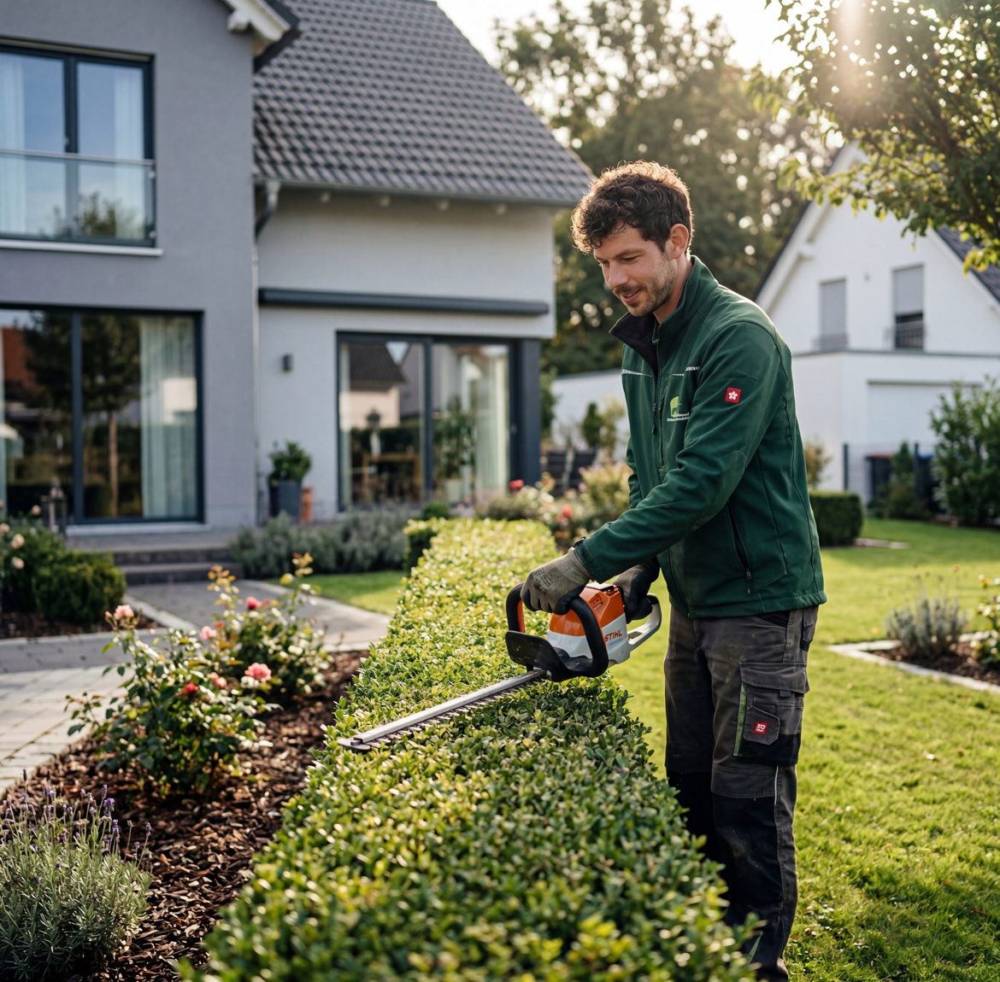
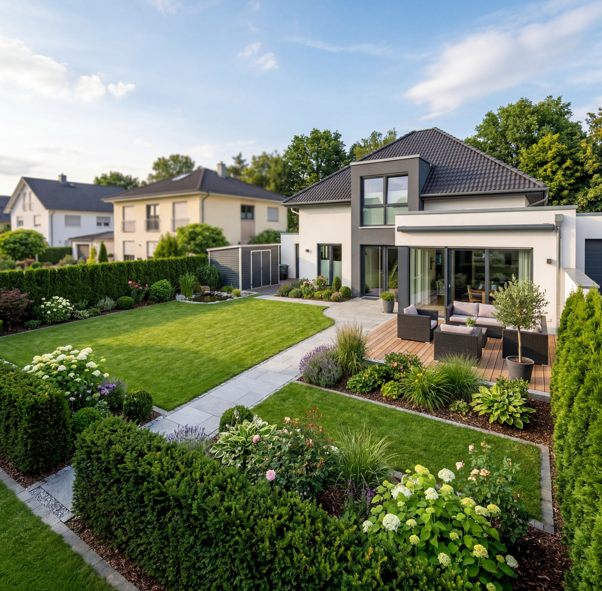

Gartenpflege
Pflege von Rasen, Beeten und Außenbereichen – sauber umgesetzt und mit Blick für ein ordentliches Gesamtbild.
Jauer&Team unterstützt Sie zuverlässig bei Arbeiten rund um Haus, Garten und Alltag – persönlich, ordentlich und direkt vor Ort.
Praktische Unterstützung rund um Haus und Garten – ordentlich, zuverlässig und individuell auf das abgestimmt, was bei Ihnen anfällt.

Pflege von Rasen, Beeten und Außenbereichen – sauber umgesetzt und mit Blick für ein ordentliches Gesamtbild.
Sorgfältige Arbeit im Detail – denn oft ist genau das entscheidend für einen professionellen Eindruck.

Unterstützung rund ums Haus, für gepflegte Außenflächen und zuverlässige Hilfe bei wiederkehrenden Aufgaben.
Bei einem lokalen Service zählt nicht nur, was gemacht wird – sondern auch, wie.
Direkter Kontakt und ein bodenständiger Umgang statt unpersönlicher Abwicklung.
Wenn Hilfe gebraucht wird, zählt Verlässlichkeit. Genau darauf können Sie bauen.
Ordnung, Sorgfalt und ein gutes Ergebnis sind für uns kein Extra, sondern Standard.
Klare Absprachen, ehrliche Einschätzung und keine unnötigen Überraschungen.
Vertrauen entsteht nicht durch Worte, sondern durch saubere Arbeit und Verlässlichkeit im Alltag.
Absprachen werden eingehalten – ohne Nachlaufen oder ständiges Nachfragen.
Ordentliche Arbeit mit Blick fürs Detail – genau so, wie man es sich wünscht.
Kein Callcenter – sondern persönlicher Kontakt von Anfang bis Ende.
Auch kleinere Arbeiten und kurzfristige Anfragen sind bei uns willkommen.
Nicht alles muss groß sein – oft sind es genau die liegengebliebenen Dinge im Alltag, bei denen schnelle Hilfe zählt.
Wenn Rasen, Hecken oder Beete gepflegt werden müssen und die Zeit dafür fehlt.
Wenn Reparaturen, Aufräumarbeiten oder praktische Hilfe im Alltag gebraucht werden.
Wenn Sie einen lokalen Ansprechpartner in Dorsten suchen, der unkompliziert erreichbar ist.
Wenn es um zuverlässige, ordentliche Hilfe rund um Haus und Garten geht – auch bei kleineren Aufträgen.
Echte Google-Bewertungen aus Dorsten – ein starkes Zeichen für Zuverlässigkeit und saubere Arbeit.
Freundlichkeit, Pünktlichkeit, ordentliche Preise und saubere Arbeit – genau diese Punkte werden in den Bewertungen immer wieder hervorgehoben.
„Ansprechbarkeit, Pünktlichkeit, Qualität, Professionalität und Wert.“
„Super Betrieb, nettes Personal 👌“
„Super Firma, sehr nette Mitarbeiter und ordentliche Preise!“
Einfach, schnell und unkompliziert – damit Sie ohne Umwege die Hilfe bekommen, die Sie brauchen.
Per WhatsApp oder Telefon kurz melden und Ihr Anliegen schildern.
Wir besprechen gemeinsam, worum es geht und was gebraucht wird.
Sie erhalten eine schnelle Rückmeldung und einen passenden Termin.
Die Arbeiten werden ordentlich, zuverlässig und persönlich durchgeführt.
Jauer&Team steht für ehrliche Arbeit, Verlässlichkeit und den persönlichen Umgang mit den Menschen, für die wir tätig sind.
Jauer&Team steht für ehrliche Arbeit, Verlässlichkeit und den persönlichen Umgang mit den Menschen, für die wir tätig sind.
Gegründet wurde das Unternehmen von Michael Jauer, der mit viel Einsatz, Hilfsbereitschaft und Herzblut den Grundstein für den heutigen Haus- und Gartenservice gelegt hat.
Nach dem Tod von Michael Jauer im vergangenen Jahr wird das Unternehmen heute von seinem Sohn Aaron weitergeführt.
Mit dem neuen Namen Jauer&Team bleibt das erhalten, worauf es von Anfang an ankam: saubere Arbeit, Verlässlichkeit und persönlicher Service.
Direkt in Dorsten vor Ort – für kurze Wege, schnelle Rückmeldung und unkomplizierte Unterstützung.
Haus- & Gartenservice mit persönlichem Ansprechpartner in Dorsten.
Kurze Antworten auf die Dinge, die vor einer Anfrage oft wichtig sind.
Die Anfrage ist unverbindlich. Nach kurzer Abstimmung erhalten Sie eine ehrliche Einschätzung.
Ja, auch kleinere Arbeiten und kurzfristige Unterstützung sind willkommen.
In der Regel melden wir uns zeitnah zurück, besonders bei Anfragen per WhatsApp.
Vor allem in Dorsten und Umgebung – also schnell erreichbar und direkt vor Ort.
Schreiben Sie einfach per WhatsApp oder rufen Sie an – wir melden uns schnellstmöglich zurück.
Sie benötigen Unterstützung rund um Haus oder Garten? Dann melden Sie sich einfach – wir helfen schnell, persönlich und zuverlässig.